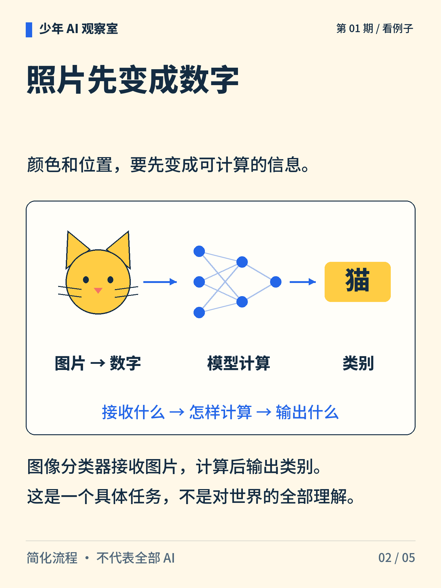
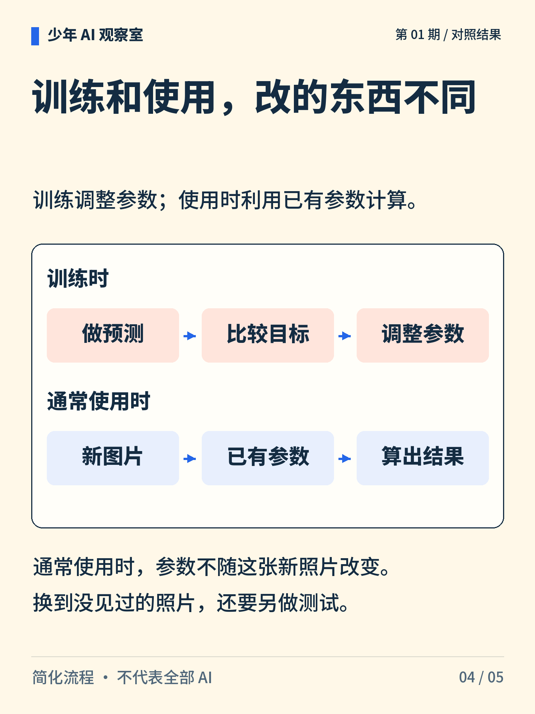

少年 AI 观察室 · 第 01 期
AI 认出了猫，它怎么算出来的？
从一张猫的照片，到屏幕上的一个“猫”字，中间发生了什么？这次先走一遍计算路线。

图解文字
猫的照片、像素和类别标签，提示“照片怎样成为分类结果”这个问题。

图解文字
图片先表示成数字，再由模型计算出类别。节点只是计算流程的示意。
图解文字
分类、定位、判断饥饿是不同任务。完成其中一项，不能保证其他项也完成。

图解文字
训练时做预测、比较目标、调整参数。通常使用时，用已有参数处理新图片。
图解文字
依次核查输入是否合适、任务是否明确、是否用新例子测试。
想一想
如果只露出一只猫耳朵，你会怎样安排测试？
展开参考思路
可以准备完整照片和只露猫耳的照片，并加入狗耳、相似物体及不同光线的例子。各组分开统计，观察遮挡是否影响分类。只挑几张答对的照片，不能说明一般情况下都可靠。
先说清任务，再沿着输入、计算和输出检查结果。
这里只说明图像分类的常见简化路线。分类结果不能直接回答饥饿、位置等其他问题；本例没有实际训练或测评模型。
正文首图为 AI 辅助生成的概念插画；第 2—5 张图按核对过的文字与规则绘制。
延伸阅读资料
文中算例与图解用于说明原理，不是实际模型的测评结果。研究结论对应以下资料。〔1〕 TensorFlow，Image classification（官方教程；访问日期：2026-10-05）。
https://www.tensorflow.org/tutorials/images/classification
Krizhevsky、Sutskever、Hinton，2012，ImageNet Classification with Deep Convolutional Neural Networks，NeurIPS。
https://proceedings.neurips.cc/paper/2012/hash/c399862d3b9d6b76c8436e924a68c45b-Abstract.html
〔2〕 Google Developers，Supervised Learning（官方课程；访问日期：2026-10-05）。
https://developers.google.com/machine-learning/intro-to-ml/supervised
〔3〕 Ribeiro、Singh、Guestrin，2016，"Why Should I Trust You?": Explaining the Predictions of Any Classifier，第 6.4 节。arXiv:1602.04938。狼与哈士奇实验由研究者刻意构造。
https://arxiv.org/abs/1602.04938
〔4〕 Guo 等，2017，On Calibration of Modern Neural Networks，ICML，PMLR 70:1321–1330。
https://proceedings.mlr.press/v70/guo17a.html
书目信息沿用原稿，本轮未重新核验外部网页的可访问性。